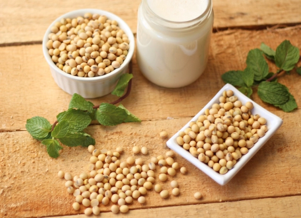
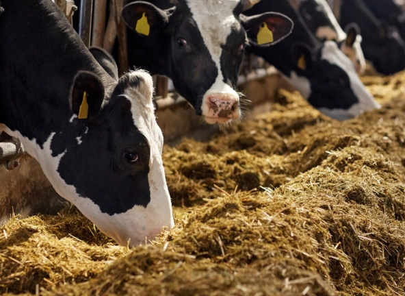
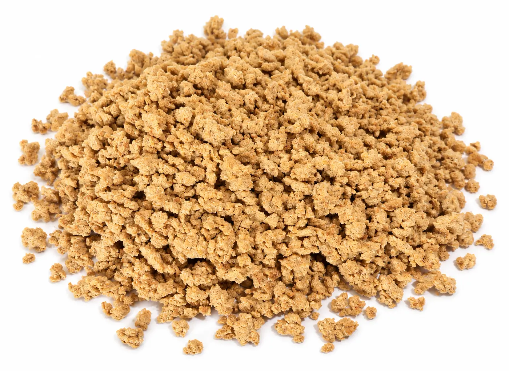
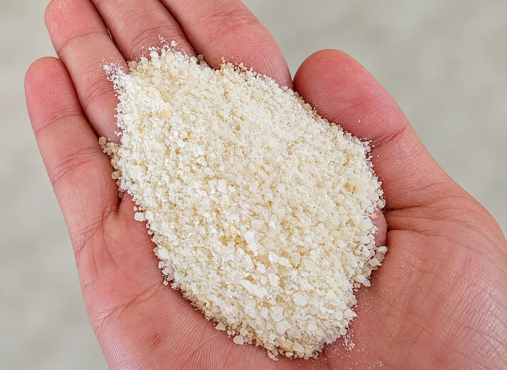
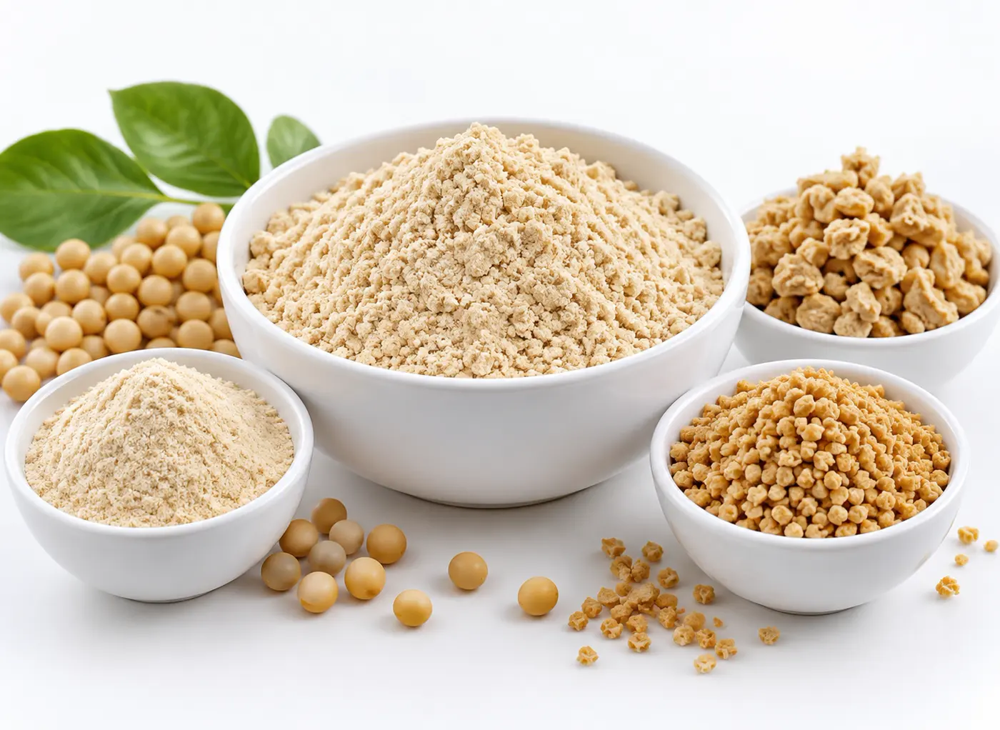

Ingredientes vegetais
Especialistas em desenvolver soluções com ingredientes vegetais
Com a premissa de que os ingredientes de origem vegetal são matrizes alimentares essenciais, completas e fundamentais para o suprimento e a segurança alimentar global, a Naturalle dedica sua trajetória de mais de três décadas à pesquisa, desenvolvimento e fornecimento de insumos derivados dessas fontes.


+30 anosproduzindo alimentos derivados de vegetais
Linhas
Nossos produtos
Conheça as linhas de nutrição humana e nutrição animal.
Nutrição Humana
Ingredientes vegetais para panificação, biscoitos, snacks, alimentos plant-based, misturas e outras aplicações da indústria de alimentos.
Ver produtosNutrição Animal
Ingredientes para formulações de pets, pré-iniciais de suínos, rações e processos que exigem proteína, energia e padronização.
Ver produtosPortfólio
Ingredientes para a indústria

Farinha de Soja Integral Micronizada
A Farinha de Soja Integral Micronizada Naturalle é produzida a partir de grãos de soja cuidadosamente selecionados e processados com tecnologia…
Ver ficha técnica
Farinha de Soja Micronizada de Baixa Fibra
A Farinha de Soja Micronizada de Baixa Fibra Naturalle é produzida a partir do grão de soja sem casca, por meio
Ver ficha técnica
Proteína de Soja Micronizada
Produzida a partir da soja desengordurada, submetida a um processo de micronização que proporciona granulometria fina, excelente homogeneidade e…
Ver ficha técnica
Proteína Texturizada de Soja
Produto obtido a partir da soja e desenvolvido para aplicações alimentícias que necessitam de boa textura, versatilidade e facilidade de…
Ver ficha técnica
Farinha de Milho
Produzida a partir do milho integral moído, resultando em um ingrediente de granulometria
Ver ficha técnica
Farinha de Arroz
Produto processado a partir da Quirela de Arroz Micronizada. Trata-se de um pó homogêneo, extremamente fino de cor branca, sabor e odor…
Ver ficha técnica
Farinha de Arroz Pré-Gelatinizada
Produto processado a partir da Quirela de Arroz Pré-Cozida e Micronizada. Trata-se de um pó homogêneo, extremamente fino de cor bege, sabor e odor…
Ver ficha técnica
Farinha de Arroz Crispy
Produto à base de arroz, desenvolvido para aplicações alimentícias que buscam textura, leveza e versatilidade. Sua composição permite utilização…
Ver ficha técnica
Farelo de Soja Integral
Produzido pelo nosso processo exclusivo de pré-esmagamento e cozimento úmido com vapor direto, com sensíveis controles de temperatura visando a…
Ver ficha técnica
Soja Grão Desativada
Produzido pelo processo exclusivo Naturalle que preserva de forma substancialmente diferenciada todos os aminoácidos, conferindo-lhe o mais…
Ver ficha técnica
Produto Customizado
Produto desenvolvido de acordo com as necessidades específicas de cada cliente e aplicação. A formulação pode ser ajustada considerando…
Ver ficha técnicaPor que escolher a Naturalle?
Temos os diferenciais que sua empresa precisa
Nos esforçamos para sermos os melhores em nosso segmento. Por isso, investimos em treinamento e alto padrão de qualidade para oferecer a melhor experiência de compra aos nossos clientes.
Fale com a Naturalle
Preencha os dados de contato e retornamos para entender a aplicação, o volume e a especificação que a sua indústria precisa.